|
Note
|
This version of the template contains some help and explanations. It is used for familiarization with arc42 and the understanding of the concepts. For documentation of your own system you use better the plain version. |
 Template
Template
Unresolved directive in <stdin> - include::chapters/../../../common/styles/arc42-help-style.adoc[]
About arc42
arc42, the template for documentation of software and system architecture.
Template Version {revnumber}. {revremark}, {revdate}
Created, maintained and © by Dr. Peter Hruschka, Dr. Gernot Starke and contributors. See https://arc42.org.
1. Introduction and Goals
1.1. Requirements Overview
diag-agent is an intelligent diagram generation tool that assists LLMs and developers in creating high-quality architecture diagrams. It addresses the common problems of syntax errors and poor layout in LLM-generated diagrams through an autonomous feedback loop.
1.1.1. Key Features
-
Autonomous diagram generation with syntax validation and design feedback
-
Multi-format support via Kroki integration (PlantUML, C4, BPMN, Mermaid, etc.)
-
Flexible deployment: CLI tool, MCP server (local/remote), or Docker container
-
Privacy-first: Local-first approach with optional remote rendering
-
LLM-agnostic: Works with any LLM via LiteLLM abstraction
-
Context-efficient: Safes main context by working in agent context. Additional minimal context consumption through help system and reference URLs
1.2. Quality Goals (Overview)
Die vollständigen Qualitätsziele stehen in Kapitel 10 (Quality Goals). Kurzüberblick:
-
Kontext-Effizienz
-
Einfache Installation
-
Privacy & Security
-
Autonomie
-
Erweiterbarkeit
1.3. Stakeholders
| Role | Expectation | Concern |
|---|---|---|
Software Architects |
Generate C4 and other architecture diagrams quickly |
Diagram quality, AsciiDoc integration |
Developers |
Simple CLI tool for documentation |
Easy installation, good defaults |
LLM Applications |
Delegate diagram generation without context overhead |
Clear interface, reliable results |
2. Architecture Constraints
2.1. Technical Constraints
| Constraint | Background |
|---|---|
Multi-platform support |
Must run on macOS, Linux, and Windows (WSL) |
Python 3.10+ |
Existing codebase and team expertise |
2.2. Organizational Constraints
| Constraint | Background |
|---|---|
Open Source |
Target developer community with transparent tooling |
Privacy compliance (GDPR) |
No automatic transmission of user data to remote servers without explicit consent |
Self-contained deployment |
Must be deployable without complex infrastructure dependencies |
2.3. Conventions
-
Configuration: Environment variables > .env file > ~/.diag-agent/config.yaml
-
Output formats: Source (.puml, .mmd) + rendered (PNG, SVG)
-
Error handling: Interactive prompts for missing config, graceful degradation, explanations on what is wrong and what to do instead of plain errors
-
Documentation: English, AsciiDoc format
3. Context and Scope
3.1. Business Context
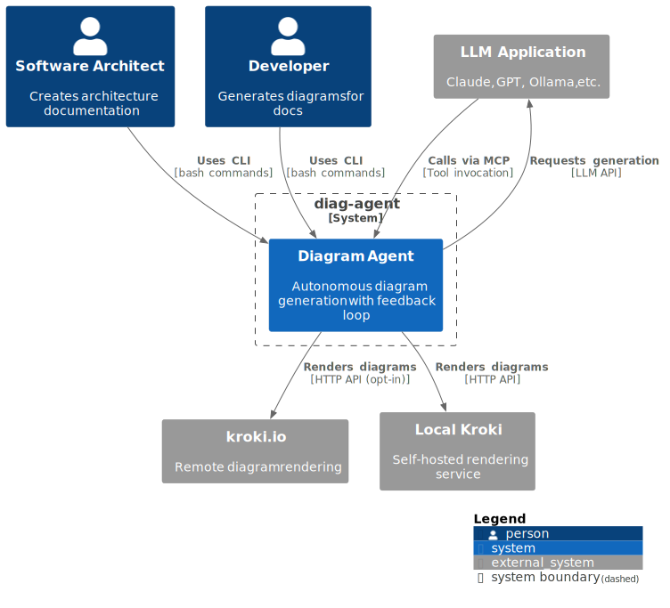
3.1.1. External Interfaces
| Interface | Description | Protocol |
|---|---|---|
CLI |
Command-line interface for direct user interaction |
Bash commands, stdin/stdout |
MCP Server |
Model Context Protocol server for LLM integration |
HTTP/SSE (streaming) |
Kroki API |
Diagram rendering service |
HTTP REST (POST /render) |
LLM API |
Generation and analysis requests |
Provider-specific (OpenAI, Anthropic, etc.) |
3.2. Technical Context
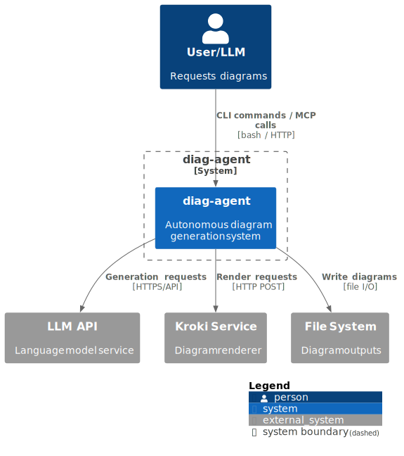
3.2.1. Technical Interfaces
Incoming: * CLI: Command-line interface accepting bash commands and arguments * MCP Server: HTTP/SSE endpoint for LLM tool integration
Outgoing: * LLM API: HTTPS requests to various LLM providers (OpenAI, Anthropic, Ollama, etc.) * Kroki API: HTTP POST to rendering service (local or remote) * File System: Write diagram source files and rendered images
4. Solution Strategy
The goal is to generate accurate, readable architecture diagrams with minimal friction for users and minimal context load for LLMs. The solution is an autonomous agent that:
-
works locally-first (privacy, offline capability), with explicit opt-in for remote services;
-
iterates on diagram source until syntax and visual quality meet an agreed bar;
-
exposes both CLI and MCP modes to fit shell-first and tool-driven LLM workflows;
-
returns concise outputs (source + rendered image or URL) and surfaces any remaining issues transparently.
4.1. Core Strategy: Autonomous Feedback Loop
The agent operates independently from the calling LLM to minimize context consumption:
-
Generate: Agent calls LLM to create diagram source code with examples
-
Validate: Submit to Kroki, capture syntax errors
-
Fix: If errors, agent provides feedback to LLM for correction
-
Analyze (if vision available): Render image, LLM evaluates layout/design
-
Iterate: Repeat steps 2-4 until quality threshold or limits reached
-
Return: Provide source + rendered outputs (or URL references)
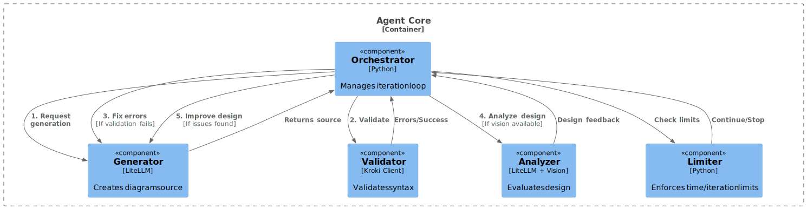
4.2. Handling Syntax Errors and Visual Quality
-
Syntax resilience: Start from diagram-type templates, avoid known-not-working directives, and always run a Kroki lint/render pass to surface exact line errors. The agent retries with the error payload (line numbers, message) and keeps a short history to avoid repeating failed constructs. If two retries fail, it returns the best-attempt source plus the captured error for transparency.
-
Visual quality: When vision is available, the agent asks the LLM to critique legibility (spacing, overlaps, label truncation) and requests a corrected version. Without vision, it applies heuristics: cap node/edge counts per diagram type, prefer left-to-right layouts, apply consistent skinparams/themes, and simplify (collapse groups) when exceeding thresholds. A small library of “good defaults” per renderer (e.g., PlantUML skinparams) is injected into prompts to steer toward readable output.
4.3. Design Decisions
Architecture decisions are maintained centrally in section 9 (Architecture Decisions) with dedicated ADR files (ADR-001 … ADR-008).
4.4. Technology Stack
| Component | Technology | Rationale |
|---|---|---|
Runtime |
Python 3.10+ |
Existing codebase, rich ecosystem |
LLM Abstraction |
LiteLLM |
Unified interface for 100+ models |
CLI Framework |
Click |
Intuitive command structure, good help generation |
MCP Implementation |
FastMCP / MCP SDK |
Standard protocol for LLM tool integration |
Diagram Rendering |
Kroki |
Supports 20+ diagram types |
Configuration |
python-dotenv, PyYAML |
Standard config management |
HTTP Client |
Requests / httpx |
Kroki API communication |
Containerization |
Docker |
Bundled Kroki Fat-JAR option |
5. Building Block View
5.1. Level 1: System Overview
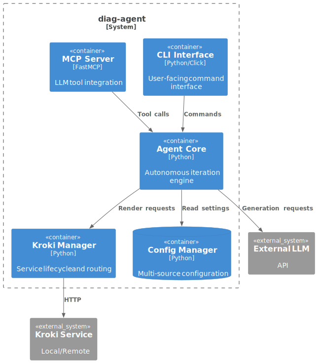
5.1.1. Component Descriptions
| Component | Responsibility |
|---|---|
CLI Interface |
Parse commands, validate arguments, display help with examples, interactive configuration |
MCP Server |
Expose tools via Model Context Protocol, handle streaming responses, serve rendered diagrams |
Agent Core |
Orchestrate feedback loop, manage iteration state, enforce limits, generate progress updates |
Kroki Manager |
Route to appropriate Kroki instance (local/remote), download and start Fat-JAR, health checks |
Config Manager |
Load configuration from env vars, .env files, and YAML, handle precedence, interactive setup |
5.2. Level 2: Agent Core Details
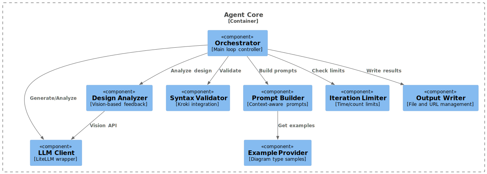
5.2.1. Component Responsibilities
- Orchestrator
-
Main state machine controlling the feedback loop. Decides whether to continue iteration based on validation results and limits.
- LLM Client
-
Wrapper around LiteLLM providing retry logic, error handling, and token counting. Supports both text and vision modes.
- Prompt Builder
-
Constructs prompts with appropriate context:
-
Diagram description from user
-
Relevant examples for the diagram type
-
Previous errors (if iterating)
-
Design feedback (if available)
-
- Syntax Validator
-
Submits diagram source to Kroki, parses error messages, determines if errors are fixable.
- Design Analyzer
-
Only active if vision-capable LLM configured:
-
Renders diagram to PNG
-
Sends to LLM with design evaluation prompt
-
Parses feedback (layout, clarity, C4 compliance, etc.)
-
- Example Provider
-
Maintains curated examples for each supported diagram type. Examples loaded on-demand to minimize memory usage.
- Iteration Limiter
-
Enforces two limits:
-
Maximum iterations (default: 5)
-
Maximum time (default: 60 seconds) Prevents infinite loops and excessive API costs.
-
- Output Writer
-
Handles multiple output scenarios:
-
Write source files (.puml, .mmd, etc.)
-
Write rendered images (PNG, SVG)
-
Optionally serve via HTTP and return URLs (MCP mode)
-
6. Runtime View
6.1. Scenario 1: CLI Diagram Generation (Success Path)
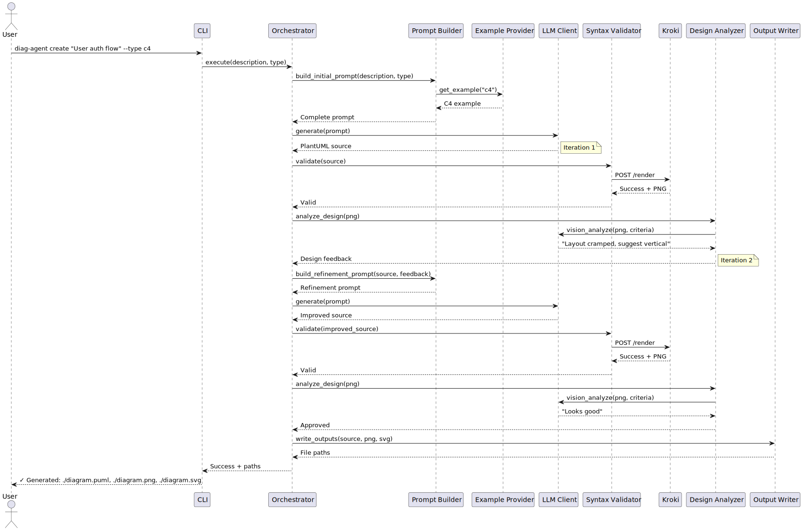
6.2. Scenario 2: MCP Tool Invocation with Streaming
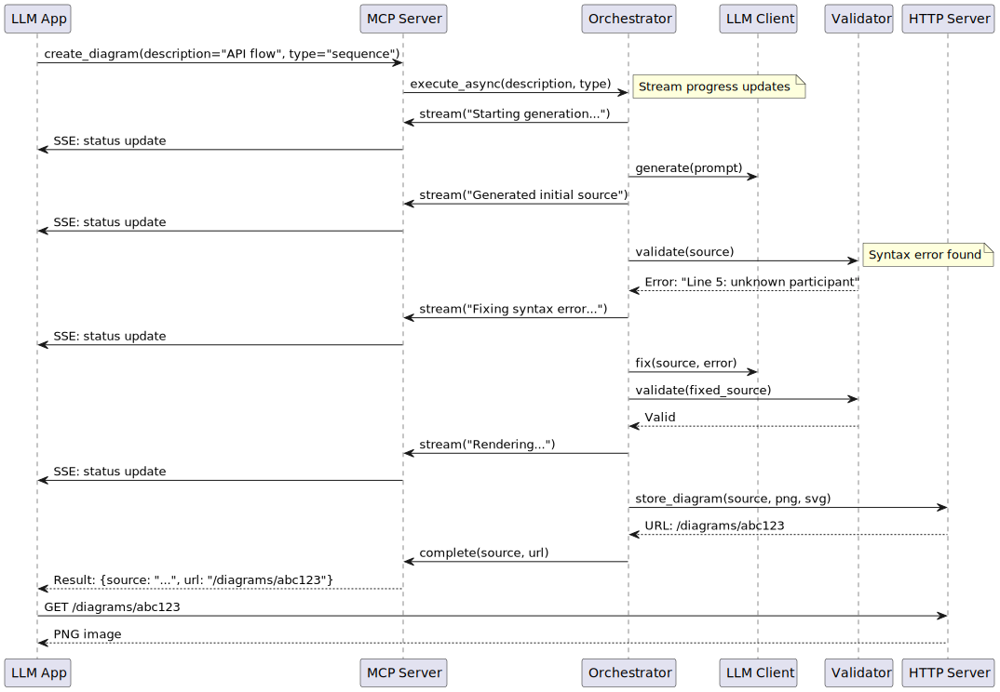
6.3. Scenario 3: First-Time Setup (Interactive)
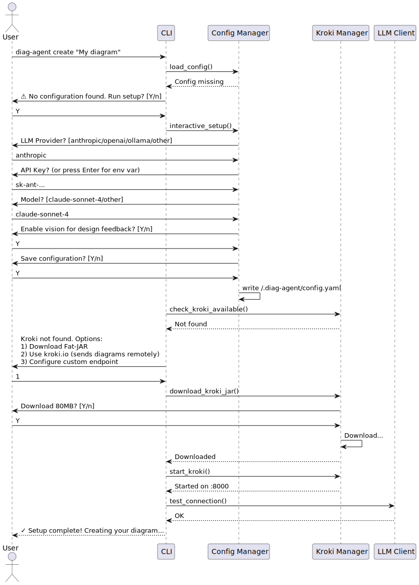
7. Deployment View
7.1. Deployment Scenario 1: Local Development (Docker)
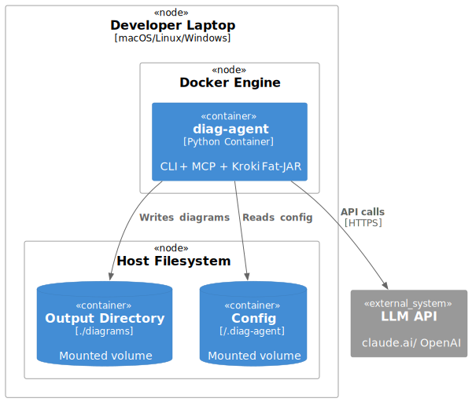
Docker Command:
docker run -it \
-v $(pwd)/diagrams:/diagrams \
-v ~/.diag-agent:/root/.diag-agent \
-e ANTHROPIC_API_KEY=$ANTHROPIC_API_KEY \
diag-agent:latest \
create "System context diagram" --type c47.2. Deployment Scenario 2: CI/CD Pipeline
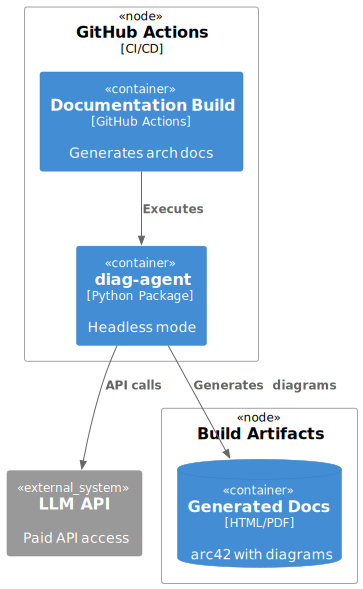
GitHub Actions Example:
- name: Generate Architecture Diagrams
env:
ANTHROPIC_API_KEY: ${{ secrets.ANTHROPIC_API_KEY }}
DIAG_AGENT_HEADLESS: true
run: |
uvx diag-agent create-batch --input arch-requirements.txt --output ./docs/diagramsAlternative (with uv installation):
- name: Generate Architecture Diagrams
env:
ANTHROPIC_API_KEY: ${{ secrets.ANTHROPIC_API_KEY }}
DIAG_AGENT_HEADLESS: true
run: |
uv pip install diag-agent
diag-agent create-batch --input arch-requirements.txt --output ./docs/diagrams7.3. Deployment Scenario 3: MCP Server for LLM Applications
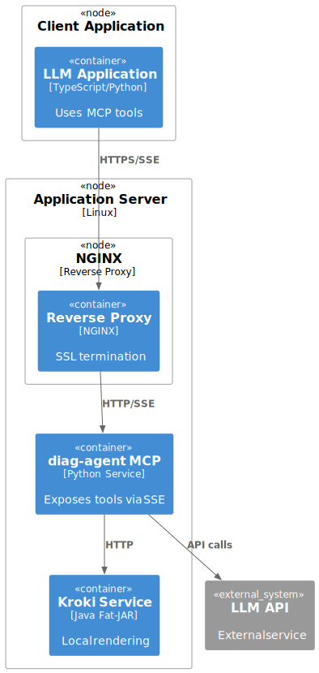
Startup Command:
diag-agent serve \
--mcp \
--host 0.0.0.0 \
--port 8080 \
--url-mode \
--cors-origins "https://my-llm-app.com"7.4. Infrastructure Requirements
| Component | Resource Requirements | Scaling | Availability |
|---|---|---|---|
diag-agent (CLI) |
Minimal (single invocation) |
N/A |
N/A |
diag-agent (MCP) |
512MB RAM, 1 CPU |
Horizontal (stateless) |
99.9% (load balanced) |
Kroki Fat-JAR |
1GB RAM, 2 CPU |
Single instance sufficient |
99% (restart on failure) |
LLM API |
External service |
N/A |
Provider SLA |
8. Cross-cutting Concepts
8.1. Configuration Management
8.1.1. Configuration Precedence
-
Environment Variables (highest priority)
-
DIAG_AGENT_LLM_PROVIDER -
DIAG_AGENT_LLM_MODEL -
ANTHROPIC_API_KEY,OPENAI_API_KEY, etc. -
DIAG_AGENT_KROKI_URL
-
-
.env File (project-specific)
-
Located in current directory
-
Same variable names as environment
-
-
Config File Structure vs. .env
-
.env: flatKEY=VALUE, mirrors environment variable names, easy to override in shells/CI; avoid nesting. -
config.yaml: structured, supports nested sections (llm/kroki/agent/output), lives at~/.diag-agent/config.yaml; better for default profiles and non-secret tuning. Secrets still prefer env/.env.
-
-
Config File (lowest priority)
-
~/.diag-agent/config.yaml -
Structured format for complex settings
-
8.1.2. Example Configuration
llm:
provider: anthropic
model: claude-sonnet-4
api_key: ${ANTHROPIC_API_KEY} # Reference env var
max_tokens: 4096
temperature: 0.3
vision_enabled: true
kroki:
mode: local # local, remote, auto
local_url: http://localhost:8000
remote_url: https://kroki.io
remote_confirmed: false # Requires interactive confirmation
jar_path: ~/.diag-agent/kroki-server.jar
agent:
max_iterations: 5
max_time_seconds: 60
validate_syntax: true
validate_design: true # Only if vision_enabled
output:
default_directory: ./diagrams
formats: [source, png, svg]
url_mode: false # Return URLs instead of file paths
examples:
cache_enabled: true
custom_examples_dir: ~/.diag-agent/examples8.2. Error Handling Strategy
8.2.1. Error Categories
| Category | Handling | User Experience |
|---|---|---|
Configuration Errors |
Interactive prompt to fix |
"API key missing. Enter now or set ANTHROPIC_API_KEY" |
Network Errors |
Retry with exponential backoff |
Progress indicator with retry count |
Syntax Errors |
Feed back to LLM for fixing |
"Fixing syntax error (attempt 2/5)…" |
Design Issues |
Feed back to LLM for refinement |
"Improving layout based on analysis…" |
Limit Exceeded |
Return best attempt so far |
"⚠ Time limit reached. Returning current version." |
LLM API Errors |
Fail fast with clear message |
"LLM API error: Rate limit exceeded. Try again in 60s." |
Kroki Unavailable |
Offer alternatives |
"Kroki not available. Download Fat-JAR or enable kroki.io?" |
8.2.2. Graceful Degradation
-
No vision model: Skip design analysis, validate syntax only
-
Kroki timeout: Return source code only
-
Iteration limit: Return last valid version
-
Network issues: Fall back to cached examples
8.3. Logging and Observability
8.3.1. Log Levels
-
DEBUG: LLM prompts, API requests/responses, iteration details
-
INFO: Progress updates, validation results, file writes
-
WARNING: Degraded functionality, retries, approaching limits
-
ERROR: Failures requiring user intervention
8.3.2. Progress Updates
In interactive mode (CLI) and MCP streaming:
🔄 Generating diagram...
✓ Generated initial source (350 tokens)
🔍 Validating syntax...
✓ Syntax valid
📊 Analyzing design...
⚠ Layout could be improved
🔄 Refining design (iteration 2/5)...
✓ Design approved
💾 Writing outputs...
✓ Created: diagram.puml, diagram.png, diagram.svg8.4. Security Considerations
8.4.1. API Key Management
-
Never log API keys
-
Support key rotation via environment variables
-
Validate keys before saving to config
-
Warn if keys in config file (suggest env vars instead)
8.4.2. Diagram Content Privacy
-
Default: All processing local (Kroki Fat-JAR)
-
Remote Kroki: Explicit opt-in with privacy notice:
` ⚠️ Using kroki.io will send diagram content to a remote server. This may include sensitive architecture information. Continue? [y/N]` -
Audit: Log when remote services are used
8.4.3. MCP Server Security
-
Bind to localhost by default
-
Optional authentication for remote access
-
Rate limiting on tool calls
-
Sanitize user inputs before LLM prompts
8.5. Performance Optimization
8.5.1. Context Efficiency Techniques
-
Lazy Example Loading: Only load examples for requested diagram type
-
URL References: Return URLs instead of base64 images in MCP mode
-
Streaming: Progress updates don’t wait for completion
-
Minimal Help:
--helpshows only essential info,--help-fullfor examples
8.5.2. Caching Strategy
-
Example Diagrams: In-memory cache, keyed by diagram type
-
Kroki Health: Cache status for 30 seconds
-
LLM Responses: No caching (always fresh generation)
9. Architecture Decisions
This section consolidates all Architecture Decision Records.
9.1. Summary Table
| ADR | Decision | Status |
|---|---|---|
ADR-001 |
Bash Tool with Help System vs. Always-On MCP |
✅ Accepted |
ADR-002 |
Agent Self-Iteration vs. Parent LLM Control |
✅ Accepted |
ADR-003 |
Local-First with Opt-In Remote |
✅ Accepted |
ADR-004 |
URL References for Rendered Diagrams |
✅ Accepted (V2) |
ADR-005 |
LiteLLM for Provider Abstraction |
✅ Accepted |
ADR-006 |
Docker-Bundled Kroki vs. Separate Service |
✅ Accepted |
ADR-007 |
Source File Direct Write |
📋 Planned (V2) |
ADR-008 |
Click as CLI Framework |
✅ Accepted |
Details:
9.2. ADR-001: Bash Tool with Help System vs. Always-On MCP
Status: Accepted
Context: LLMs with computer use need diagram generation, but MCP descriptions consume context even when unused.
Decision: Primary interface is bash tool with --help. MCP mode is optional and explicitly started.
Consequences: * ✅ Context efficient: help text only loaded when needed * ✅ Works with any LLM that has bash access * ✅ MCP still available for LLMs without bash * ⚠️ Two deployment modes to maintain
Related Quality Goals: 1 Context Efficiency, 4 Autonomy
9.2.1. Pugh Matrix
| Criterion | Bash tool (baseline) | Always-on MCP | Bash + MCP opt-in (chosen) |
|---|---|---|---|
Context Efficiency |
0 |
- (constant context footprint) |
+ (only when needed) |
User Control |
0 |
0 |
+ (user decides mode) |
Implementation Effort |
0 |
- (server upkeep) |
0 |
LLM Compatibility |
0 |
+ (LLM-native integration) |
+ (works for bash + MCP) |
9.3. ADR-002: Agent Self-Iteration vs. Parent LLM Control
Status: Accepted
Context: Feedback loop requires multiple LLM calls. Who controls the iteration?
Decision: Agent iterates autonomously with its own LLM client.
Consequences: * ✅ Minimal context in parent conversation * ✅ Agent can optimize prompts for diagram generation * ✅ Parallel processing possible * ⚠️ Requires separate LLM API access * ⚠️ User sees less of the process (mitigated by progress output)
Related Quality Goals: 1 Context Efficiency, 4 Autonomy
9.3.1. Pugh Matrix
| Criterion | Parent LLM controls loop (baseline) | Agent self-iteration (chosen) | Hybrid (user-stepped) |
|---|---|---|---|
Context Usage |
0 |
+ (minimal parent context) |
- (more back-and-forth) |
Reliability |
0 |
+ (agent-optimized retries) |
0 |
User Transparency |
+ (user sees all) |
0 (progress messages) |
+ (full visibility) |
Implementation Effort |
- (complex orchestration outside agent) |
0 |
- (more prompts, slower) |
9.4. ADR-003: Local-First with Opt-In Remote
Status: Accepted
Context: Privacy concerns with sending diagram data to remote services.
Decision: * Default: Local Kroki (Fat-JAR or user-hosted) * kroki.io requires interactive confirmation * Confirmation stored in config
Consequences: * ✅ GDPR compliant by default * ✅ Works offline * ✅ Users make informed decisions * ⚠️ Initial setup more complex (Kroki download)
Related Quality Goals: 3 Privacy & Security
9.4.1. Pugh Matrix
| Criterion | Remote by default (baseline) | Local-first, remote opt-in (chosen) | Local-only |
|---|---|---|---|
Privacy |
- (data leaves host) |
+ (default local) |
+ (no remote) |
Offline Capability |
- (requires internet) |
+ (works offline) |
+ (offline) |
Setup Effort |
+ (no local install) |
0 (needs jar download) |
- (must install locally) |
Performance/Latency |
0 |
+ (local latency) |
- (no remote fallback) |
9.5. ADR-004: URL References for Rendered Diagrams
Status: Accepted (V2 Feature)
Context: Base64-encoded images or file paths consume significant context.
Decision: MCP server mode can serve rendered diagrams via HTTP, returning short URLs.
Consequences: * ✅ Minimal context consumption * ✅ Diagrams displayable in web interfaces * ⚠️ Requires HTTP server (already present in MCP streaming mode) * ⚠️ Lifecycle management needed (when to delete?)
Related Quality Goals: 1 Context Efficiency
9.5.1. Pugh Matrix
| Criterion | Base64 in responses (baseline) | File paths only | Short URLs (chosen) |
|---|---|---|---|
Context Size |
- (large payloads) |
0 |
+ (tiny payload) |
User Convenience |
+ (inline) |
0 |
+ (easy to preview/embed) |
Complexity |
0 |
+ (simple) |
0 (reuse MCP HTTP server) |
Lifecycle/Storage |
- (bloats responses) |
- (needs shared FS) |
- (need cleanup policy) |
9.6. ADR-005: LiteLLM for Provider Abstraction
Status: Accepted
Context: Need to support multiple LLM providers (Anthropic, OpenAI, local models).
Decision: Use LiteLLM as unified interface.
Consequences: * ✅ 100+ models supported * ✅ Consistent API across providers * ✅ Easy to add new providers * ⚠️ Additional dependency * ⚠️ Abstraction may hide provider-specific features
Related Quality Goals: 5 Extensibility
9.6.1. Pugh Matrix
| Criterion | Direct provider SDKs (baseline) | LiteLLM abstraction (chosen) | Single-provider lock-in |
|---|---|---|---|
Provider Flexibility |
0 (per-provider) |
+ (swap providers easily) |
- (no flexibility) |
Dev Velocity |
- (multiple SDKs) |
+ (one API surface) |
+ (simplest code) |
Runtime Stability |
0 |
0 |
+ (fewer moving parts) |
Feature Access |
+ (full features) |
- (some provider-specific features hidden) |
- (no access to others) |
9.7. ADR-006: Docker-Bundled Kroki vs. Separate Service
Status: Accepted
Context: Users want simple installation. Kroki Fat-JAR is ~80MB. Should it be included in Docker image?
Decision: Include Kroki Fat-JAR in Docker image by default. Provide slim variant without it.
Consequences:
* ✅ One-command deployment: docker run diag-agent
* ✅ Works offline immediately
* ⚠️ Larger image size (~300MB vs ~50MB slim)
* ⚠️ Longer build times
Related Quality Goals: 2 Ease of Installation, 3 Privacy & Security
9.7.1. Pugh Matrix
| Criterion | Hosted Kroki service (baseline) | Local Docker Kroki (chosen) | Local native Kroki install |
|---|---|---|---|
Portability |
0 |
+ (works offline) |
+ (offline) |
Setup Complexity |
+ (no local setup) |
- (need Docker + image pull) |
- (package install/maintenance) |
Runtime Reliability |
+ (managed uptime) |
+ (self-controlled uptime) |
0 (depends on host services) |
Security Surface |
- (network and external trust) |
0 (limited to image and Docker) |
- (host-level dependencies) |
Alternatives Considered: * Multi-stage build with optional Fat-JAR (chosen approach) * Always download on first run (slower, requires internet) * Separate kroki container via docker-compose (more complex)
9.8. ADR-007: Source File Direct Write (V2 Feature)
Status: Planned for V2
Context: Users want agent to directly update .adoc files with generated diagrams.
Decision: Add --write-to flag that allows specifying target file and location within file.
Implementation Ideas:
diag-agent create "Component diagram" \
--type c4 \
--write-to architecture.adoc \
--section "Level 2: Components" \
--replace-marker "<!-- DIAGRAM: components -->"Open Questions: * How to handle concurrent edits? * Should agent create section if missing? * Support for multiple diagram formats in one file?
Consequences: * ✅ Simple change tracking per run * ✅ Reduces accidental overwrites when omitted * ⚠️ Requires source files to be writable * ⚠️ No multi-user locking * ⚠️ Needs docs to set read/write flags
Related Quality Goals: 4 Autonomy
9.8.1. Pugh Matrix
| Criterion | Always allow writes (baseline) | Explicit write-to flag (chosen) | Central locking service |
|---|---|---|---|
Safety |
- (risk of accidental edits) |
+ (opt-in edits) |
+ (prevents conflicts) |
User Effort |
+ (zero friction) |
0 (requires a flag per run) |
- (setup overhead) |
Reliability |
0 |
+ (predictable behavior) |
+ (coordinated access) |
Collaboration |
- (no coordination) |
0 (no extra locks) |
+ (supports multi-user) |
9.9. ADR-008: Click as CLI Framework
Status: Accepted
Context: Command-line UX is the primary entry point; needs structured arguments, good help texts, and compatibility with bash-driven LLM tooling.
Decision: Use Click as the CLI framework.
Alternatives Considered: * argparse (stdlib) — stable but verbose, less friendly help output * Typer — modern and type-hint friendly, but another dependency and smaller ecosystem * docopt / fire — fast to start, but less control over UX and validation
Consequences: * ✅ Rich help/usage output with minimal boilerplate * ✅ Mature ecosystem and patterns for nested commands/options * ✅ Works well with bash and LLM-driven command execution * ⚠️ Additional dependency vs. argparse * ⚠️ Some learning curve for contributors unfamiliar with Click
Related Quality Goals: 1 Context Efficiency
9.9.1. Pugh Matrix
| Criterion | argparse (baseline) | Click (chosen) | Typer |
|---|---|---|---|
UX Quality |
0 |
+ (rich help, colors, nesting) |
+ (fast to code with type hints) |
Dev Velocity |
0 |
+ (concise decorators) |
+ (Click-based) |
Ecosystem |
+ (stdlib, stable) |
+ (mature extensions) |
0 (smaller ecosystem) |
Learning Curve |
- (manual help/UX) |
0 (moderate) |
0 (similar to Click) |
10. Quality Requirements
10.1. Quality Goals
| Priority | Quality Goal | Motivation | Relevante Szenarien | Unterstützende ADRs |
|---|---|---|---|---|
1 |
Context Efficiency |
Minimize token consumption in parent LLM conversations through help system, URL references, and self-contained agent logic |
||
2 |
Ease of Installation |
Developers should install via pip or docker run without complex setup |
||
3 |
Privacy & Security |
No diagram data sent to remote servers without explicit user consent |
||
4 |
Autonomy |
Agent iterates independently without requiring parent LLM intervention |
||
5 |
Extensibility |
Support for all Kroki diagram types and easy LLM provider switching |
Future scenario (TBD) |
10.2. Quality Scenarios
10.2.1. Scenario 1: Context Efficiency
Related Quality Goals: 1 (Context Efficiency), 4 (Autonomy)
| Aspect | Description |
|---|---|
Scenario |
Architect asks LLM to generate C4 diagram in claude.ai |
Environment |
Claude with computer use enabled, existing conversation with 50k tokens |
Stimulus |
User: "Create a C4 context diagram for our API gateway" |
Response |
Claude calls |
Measure |
Total context consumed < 2k tokens (help text + command + file path response) |
Target |
95% of diagram requests use < 3k tokens in parent conversation |
10.2.2. Scenario 2: Installation Time
Related Quality Goals: 2 (Ease of Installation)
| Aspect | Description |
|---|---|
Scenario |
Developer installs diag-agent for first time |
Environment |
Fresh Ubuntu system, Python 3.10 installed, internet available |
Stimulus |
Developer runs: |
Response |
Interactive setup guides through configuration, downloads Kroki if needed |
Measure |
< 2 minutes from first command to generated diagram (with uvx) |
Target |
90% of users generate first diagram within 5 minutes |
10.2.3. Scenario 3: Syntax Error Recovery
Related Quality Goals: 1 (Context Efficiency)
| Aspect | Description |
|---|---|
Scenario |
LLM generates PlantUML with syntax error |
Environment |
Agent with Claude Sonnet 4, local Kroki available |
Stimulus |
Invalid PlantUML: |
Response |
Agent detects error, feeds back to LLM, receives corrected version |
Measure |
95% of common syntax errors fixed within 2 iterations |
Target |
< 10 seconds per iteration |
10.2.4. Scenario 4: Privacy Compliance
Related Quality Goals: 3 (Privacy & Security)
| Aspect | Description |
|---|---|
Scenario |
User generates diagram containing internal API details |
Environment |
Default configuration, no remote services configured |
Stimulus |
|
Response |
All processing happens locally (LLM API + local Kroki) |
Measure |
Zero diagram data sent to kroki.io without explicit consent |
Target |
100% compliance with default settings |
10.3. Quality Tree
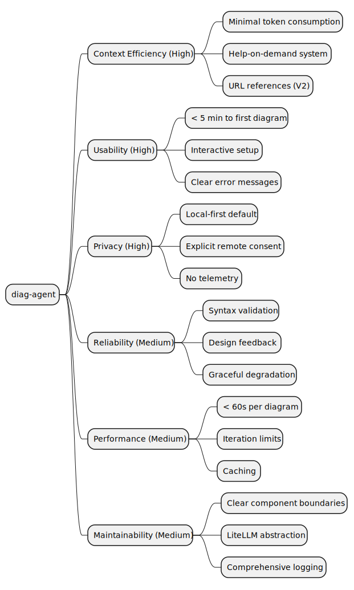
11. Risks and Technical Debts
11.1. Risk Assessment
| Risk | Description | Probability | Impact | Mitigation |
|---|---|---|---|---|
LLM API Costs |
Iterative refinement may consume significant API credits |
High |
Medium |
Set conservative default limits (5 iterations, 60s timeout), expose costs in docs |
Vision Model Unavailability |
Not all users have access to vision-capable models |
Medium |
Low |
Graceful fallback to syntax-only validation, clear messaging |
Kroki Service Instability |
Local Kroki may crash or become unresponsive |
Low |
Medium |
Health checks, auto-restart, clear error messages, fallback to source-only output |
Prompt Injection |
Malicious diagram descriptions could manipulate agent behavior |
Medium |
Medium |
Sanitize inputs, limit LLM capabilities in agent context, review prompts |
Context Window Limits |
Large diagrams + examples may exceed model context |
Low |
High |
Truncate examples intelligently, split large diagrams, clear error messages |
Example Maintenance |
Examples may become outdated with new Kroki versions |
Medium |
Low |
Version examples with Kroki compatibility info, community contributions |
Docker Image Size |
Bundled Kroki increases image to ~300MB |
High |
Low |
Provide slim variant, document trade-offs, optimize layers |
11.2. Technical Debt
11.2.1. Accepted Debt
| Item | Reason | Payback Plan |
|---|---|---|
Limited diagram type testing |
Focus on C4 and PlantUML initially |
Expand test coverage iteratively |
11.2.2. Debt to Avoid
-
Tight coupling to LLM provider: Use LiteLLM abstraction consistently
-
Hard-coded prompts: Externalize to templates for easy iteration
-
No integration tests: CI must include end-to-end tests with real Kroki
-
Ignoring token costs: Instrument and log API usage from day one
12. Glossary
| Term | Definition |
|---|---|
Agent |
Autonomous component that iterates independently using its own LLM client |
C4 Model |
Context, Containers, Components, Code - hierarchical architecture diagram approach |
Context Efficiency |
Minimizing token consumption in parent LLM conversations |
Feedback Loop |
Iterative process: generate → validate → analyze → refine |
Headless Mode |
Non-interactive operation suitable for CI/CD pipelines |
Kroki |
Unified API for creating diagrams from textual descriptions (PlantUML, Mermaid, etc.) |
Kroki Fat-JAR |
Self-contained Java archive (~80MB) running complete Kroki service locally |
LiteLLM |
Python library providing unified interface to 100+ LLM providers |
MCP (Model Context Protocol) |
Standard protocol for exposing tools to LLMs via HTTP/SSE |
Vision Model |
LLM capable of analyzing images (e.g., Claude Sonnet with vision, GPT-4V) |
PlantUML |
Text-based diagram syntax, particularly popular for UML and architecture diagrams |
Syntax Validation |
Checking if diagram source code is valid for the target renderer |
Design Analysis |
Vision-based evaluation of diagram layout, clarity, and conventions |
URL Reference |
Returning short URL instead of file path or base64 data to save context |
Remote Confirmation |
Interactive consent before sending data to remote services |
SSE (Server-Sent Events) |
HTTP protocol for server-to-client streaming, used in MCP |
Iteration Limit |
Maximum number of refinement cycles before returning current result |
Example Provider |
Component managing curated sample diagrams for each type |
Feedback
Was this page helpful?
Glad to hear it! Please tell us how we can improve.
{kind=link}
Sorry to hear that. Please tell us how we can improve.
{kind=link}